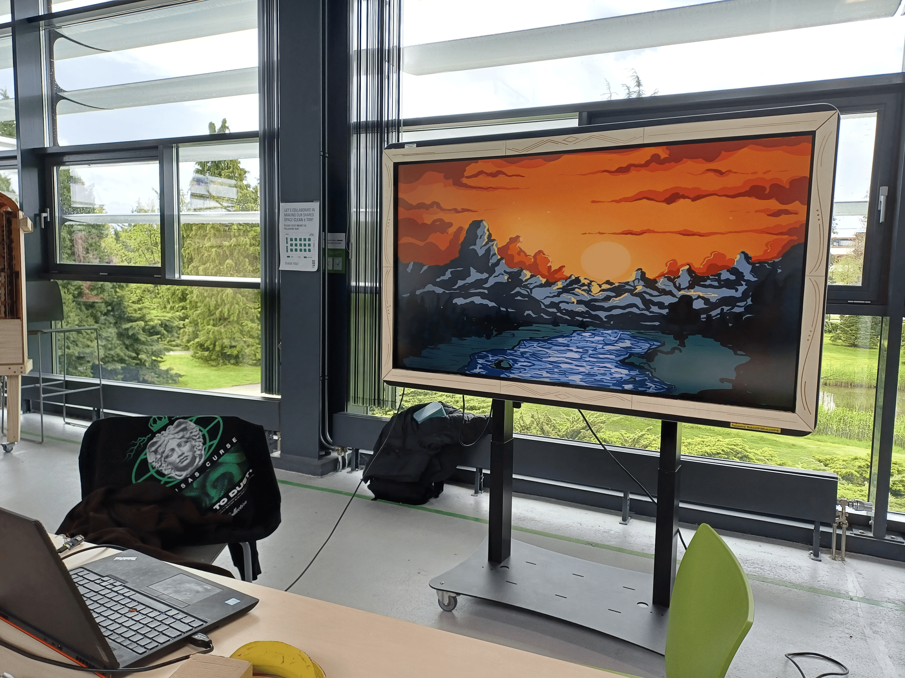
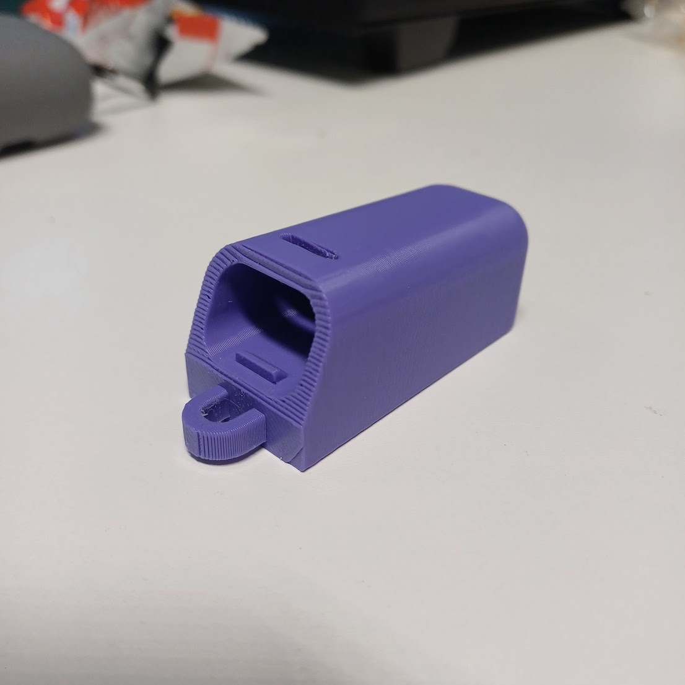

Fitness Step Tracker
I designed and built a wearable step tracker that counts a user's steps using an accelerometer and displays real-time stats such as step count and distance on a small onboard screen. The project involved embedded programming, sensor calibration, and iterating on the logic used to filter out false step readings from everyday hand and arm movement.
The device's enclosure was custom 3D printed to comfortably hold the electronics on the wrist, and the firmware was written to balance responsiveness with battery life. This project combined hardware prototyping with low-level programming to create a compact, functional fitness device from the ground up.

